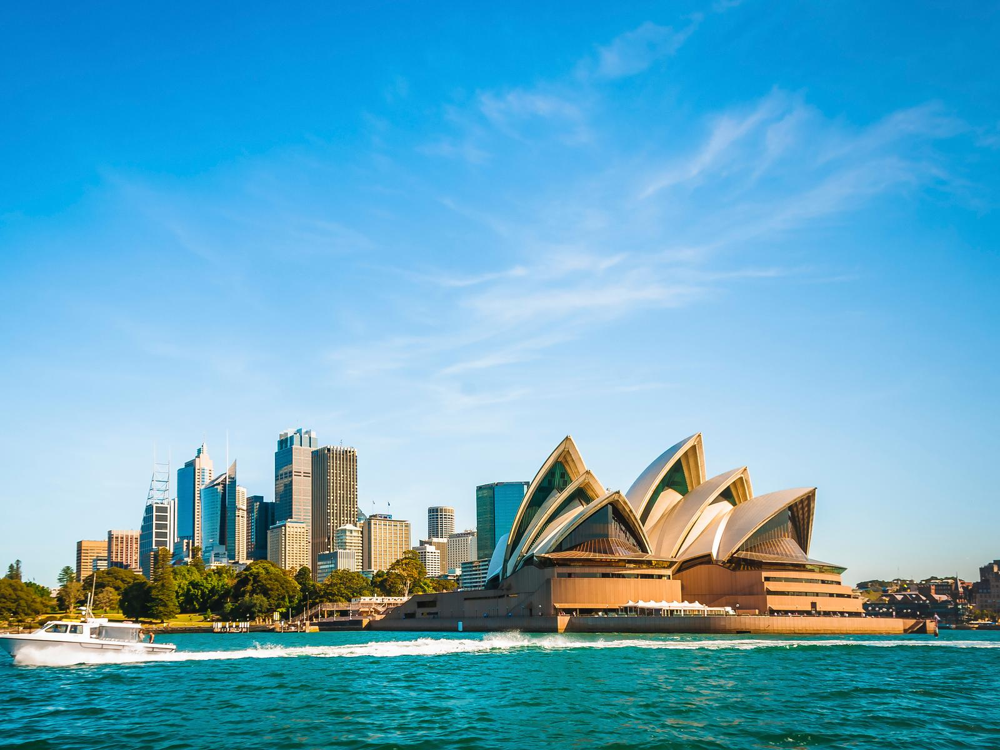
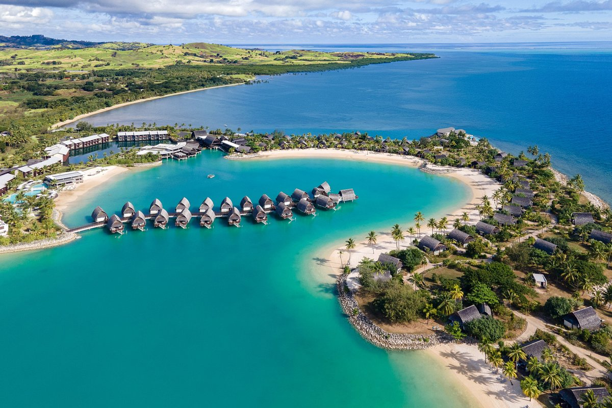
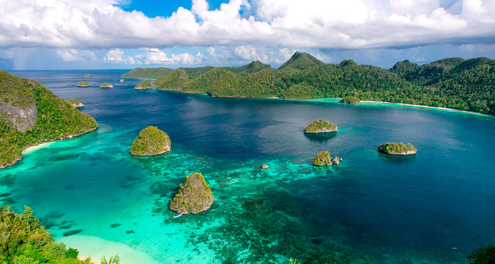

A Oceania pode até parecer distante no mapa, mas é um verdadeiro paraíso para quem ama natureza, aventura e culturas fascinantes. Entre praias paradisíacas, florestas tropicais, montanhas vulcânicas e povos com tradições riquíssimas, aqui estão 4 países desse continente incrível que você precisa colocar na sua lista:
Austrália
Se você ama natureza, o Canadá é um prato cheio. Lagos cristalinos, florestas que parecem saídas de filmes e montanhas que tiram o fôlego. Cidades como Vancouver, Toronto e Montreal misturam o urbano com o verde de forma harmoniosa. No outono, o espetáculo das folhas vermelhas é um dos cenários mais bonitos que você vai ver na vida.
Nova Zelândia
Sim, o Brasil é um dos destinos mais incríveis do mundo — e não estamos falando só de praias! Chapada Diamantina, Amazônia, Lençóis Maranhenses, Pantanal… A diversidade natural é imensa, sem contar a cultura rica, a comida de dar água na boca e a alegria do povo. É viagem que toca a alma.

Fiji
Destino perfeito para quem ama história e aventura. Machu Picchu é só o começo: o Vale Sagrado, a culinária de Lima (uma das melhores do mundo!) e as paisagens surrealistas de Huaraz e da Montanha Colorida fazem do Peru uma experiência transformadora. Ideal para quem curte trilhas, cultura ancestral e comida boa.
Papua-Nova Guiné
Caminhar pelas ruas de Havana é como viajar no tempo. A arquitetura colonial, os carros antigos, a música nas esquinas e a energia vibrante do povo fazem de Cuba um destino único. Além disso, as praias caribenhas são de um azul inacreditável. Uma viagem diferente, intensa e cheia de histórias.
